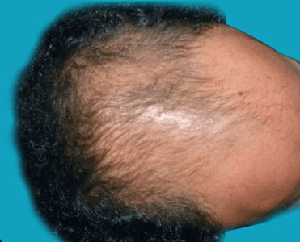

Minoxidil (Rogaine) is the only drug approved by the U. S. Food and Drug Administration
(FDA) to treat female pattern baldness. It’s available in 2% or 5% formulas.
If possible, opt for the 5% formula.
To use, apply minoxidil to your scalp every day. Though it won’t fully restore all
the hair you’ve lost, minoxidil can grow back a significant amount of hair and give
your hair an overall thicker appearance.
You probably won’t start to see results for 6 to 12 months. You’ll need to keep
using minoxidil to maintain the effect, or it will stop working. If it stops working,
your hair may return to its previous appearance.
The following side effects are possible:
Finasteride (Propecia) and dutasteride (Avodart) are FDA-approved to treat hair
loss in men. They’re not approved for women, but some doctors do recommend them
for female pattern baldness.
Studies are mixed as to whether these drugs work in women, but some research has
shown that they do help regrow hair in female pattern baldness.
Side effects can include headaches, hot flashes, and a decreased sex drive,
especially during the first year of use. Women shouldn’t get pregnant while
on this drug, because it can increase the risk for birth defects.
Spironolactone (Aldactone) is a diuretic, which means it removes excess fluid
from the body. It also blocks androgen production, and it may help regrow hair in women.
This drug can cause a number of side effects, including:
If low iron is contributing to your hair loss, your doctor might prescribe an iron supplement.
At this time, there isn’t any evidence that taking iron will regrow your hair. Other
supplements, such as biotin and folic acid, are also promoted to thicken hair.
One study did show that women developed thicker hair after taking omega-3 fatty acids,
omega-6 fatty acids, and antioxidants. However, it’s best to check with your doctor before
taking any supplements to re-grow hair.
Laser combs and helmets are FDA-approved to treat hair loss. They use light energy to
stimulate hair regrowth. More research needs to be done to determine if this is truly effective.
Platelet-rich plasma therapy may also be beneficial. This involves drawing your blood,
spinning it down, then injecting your own platelets back into your scalp to stimulate hair
growth. Though promising, more studies need to be done.
You may be able to conceal hair loss by wearing a wig or using a spray hair product.
A hair transplant is a more permanent solution. During this procedure, your doctor removes a
thin strip of hair from one part of your scalp and implants it in an area where you’re missing
hair. The graft regrows like your natural hair.